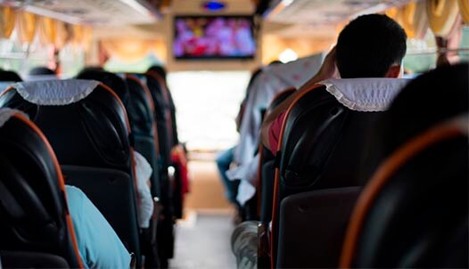

O transporte fretado é um serviço de transporte coletivo realizado de forma privada, mediante contrato com pessoas físicas ou jurídicas sem interferência do poder público. Na prática isso significa que qualquer empresa ou pessoa pode contratar uma van ou ônibus para transportar pessoas de um local para outro.
Tranportamos os funcionarios da sua empresa com agilidade, segurança e pontualidade
Muito mais do que um simples motorista. É uma responsabilidade tripla por estar conduzindo bem, transportando crianças com segurança

Realizamos transporte personalizado aos principais pontos turísticos da região.
Atendemos perfeitamente a diversas empresas, executando o transporte para feiras e congressos
E saiba mais sobre a nossa empresa
Volta às aulas chegando ou para os que iniciam sua vida escolar agora, nova rotina começando. Mas e como seu bem mais precioso irá para a escola? Se você não possui disponibilidade para leva-lo e busca-lo, você dependerá dos serviços de transportes escolares, mas como saber se é seguro, confiável e que seu filho estará em boas mãos?

Para enviar uma encomenda por ônibus, você deve deslocar-se até a rodoviária da sua cidade e despachar a mercadoria na próxima viagem. A maioria das empresas leva a sua encomenda até o destino final daquela viagem.

é o serviço prestado a um cliente ou a um grupo de pessoas, mediante contrato, para uma viagem com finalidade específica ou turística. Podemos destacar o transporte para excursões e viagens de turismo, translado entre aeroportos e hotéis, city tours, eventos, passeios culturais entre outros.
Redes Sociais